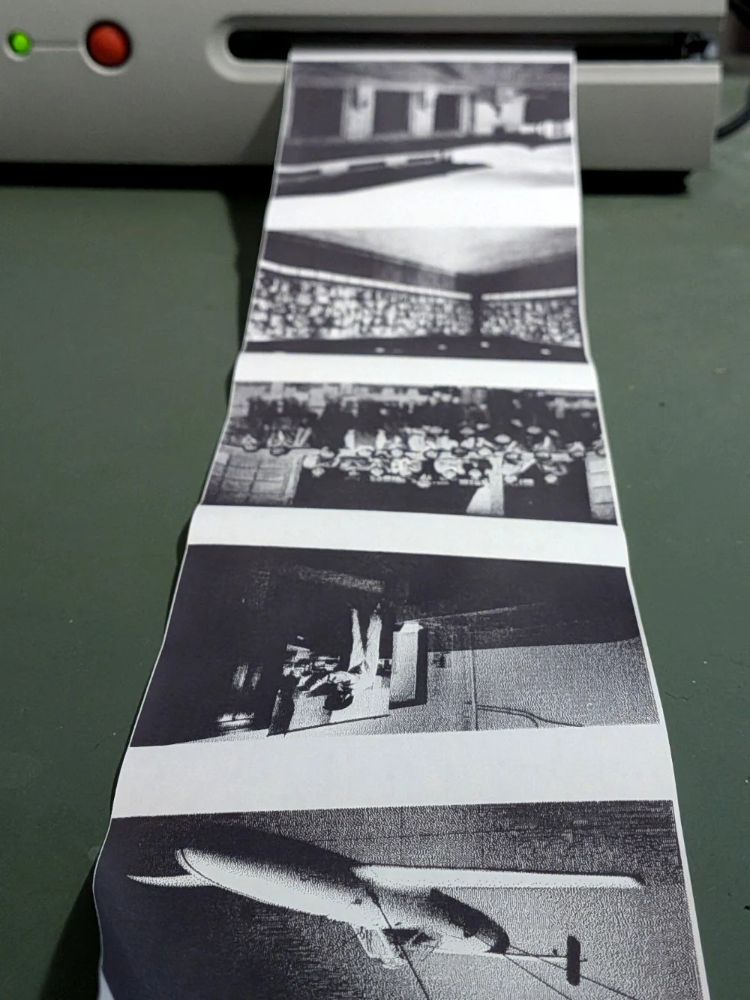

Selected work
Make
Cameras, printed parts and digital instruments.
 CameraPiCa135Can a pocket pinhole camera offer shift and several frame sizes?
CameraPiCa135Can a pocket pinhole camera offer shift and several frame sizes? 3D printHasselblad Film Magazine MountCan a Hasselblad film magazine become a modular camera?
3D printHasselblad Film Magazine MountCan a Hasselblad film magazine become a modular camera?
Software / printDATAMAX / STUDIOHow can an industrial label printer print photographs?